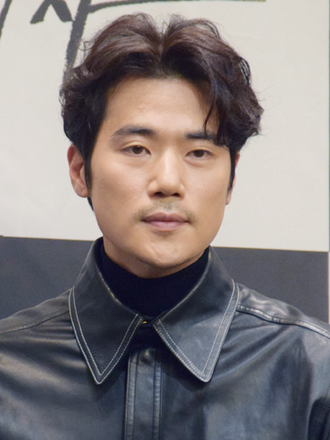
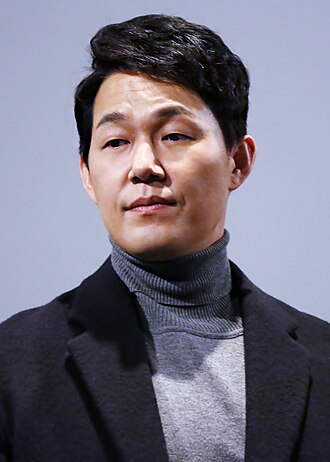

대하드라마 문무 등장인물·몇부작·방송시간, 재방송까지 한눈에

(이미지 출처: Pexels, 무료 라이선스 — 드라마와 관계없는 경주 월정교 사진입니다)
「고려거란전쟁」 이후 한동안 뜸했던 KBS 대하사극이 다시 돌아왔습니다. 삼국 통일을 이룬 신라 문무왕의 이야기를 다룬 「문무」입니다. 주말 밤에 챙겨 보시려는 분들을 위해 방송 시간과 등장인물을 먼저 정리해 두었습니다.
기본 방송 정보
| 항목 | 내용 |
|---|---|
| 채널 | KBS 2TV |
| 본방송 | 토·일요일 밤 9시 20분 |
| 첫 방송 | 2026년 11월 14일(토) |
| 분량 | 28부작 |
| 극본 | 김리헌·홍진이 |
| 연출 | 김영조·구성준 |
KBS가 3년 만에 선보이는 정통 대하사극으로, 제작비가 300억 원대라고 알려졌습니다. 첫 회 시청률은 닐슨코리아 전국 기준 4.7%로 보도됐고(5.1%로 전한 매체도 있습니다), 김춘추가 비담 앞에 무릎을 꿇는 장면은 분당 최고 6.4%까지 올랐습니다.
재방송은 언제 하나요
11월 넷째 주 KBS2 편성표를 보면 재방송이 꽤 많이 잡혀 있습니다.
- 수요일·목요일 밤 11시 20분
- 토요일 오후 2시 5분, 3시 25분 지난 회차 연속 방송(본방 전에 앞 회차를 따라잡기 좋습니다)
- 일요일 낮 12시 45분, 오후 2시 5분
- 주말 본방이 끝난 뒤 자정 무렵
주말 밤 본방을 놓치셔도 평일 밤이나 다음 주 토요일 낮에 다시 보실 수 있습니다. 재방송 시간은 주마다 바뀌니 KBS 편성표를 함께 확인해 주세요.
어떤 이야기인가요
신라 30대 왕인 문무왕, 즉 즉위하기 전의 김법민이 주인공입니다. 고구려·백제·신라가 맞서던 7세기, 아버지 김춘추와 장군 김유신 곁에서 자란 김법민이 끝내 삼국 통일 전쟁을 마무리하기까지의 이야기를 그립니다. 첫 회에는 김춘추·김법민 부자의 갈등과 고구려 연개소문의 반란이 함께 그려졌습니다. 몽골에서 찍은 대규모 전투 장면도 볼거리로 꼽힙니다.
예고편으로 먼저 보기
어떤 분위기인지 궁금하시면 KBS가 공식 유튜브에 올린 종합 예고편부터 보셔도 좋습니다.
등장인물과 배우
신라
- 김법민이현욱주인공, 훗날 신라 문무왕

김춘추김강우김법민의 아버지, 훗날 태종무열왕
김유신박성웅신라의 장군, 김춘추와 손잡은 인물- 비담이지훈신라의 귀족
- 선덕여왕최수린신라의 여왕
고구려
- 연개소문장혁고구려의 실력자
주요 관계
- 김춘추김법민아버지와 아들
- 김춘추김유신신라를 함께 이끈 동지
- 김춘추비담첫 회부터 얽힌 사이
공개된 보도자료 기준으로 정리했고, 방송이 진행되면 이어서 고쳐 둡니다. 사진이 없는 인물은 자유 라이선스 사진이 확인되지 않은 경우입니다.
사진: 이현욱 — VGT TV - Giải Trí, CC BY 3.0, 위키미디어 공용 · 김강우 — PARKJAEHWAN (kinocine.com), CC BY-SA 4.0, 위키미디어 공용 · 박성웅 — 김등등, CC BY 4.0, 위키미디어 공용 · 장혁 — tenasia10, CC BY 3.0, 위키미디어 공용
이 밖에 조성하, 정웅인, 김도현, 백성현 등이 출연합니다. 실제 역사에서도 김유신은 김춘추의 처남으로, 김법민에게는 외삼촌이 됩니다. 드라마가 역사를 바탕으로 하되 이야기를 새로 꾸민 부분도 있으니, 역사책과 꼭 같지 않을 수 있다는 점은 감안하고 보시면 좋겠습니다.
처음 보신다면 이렇게
인물이 많아 보여도 처음에는 "신라 쪽 김춘추·김법민·김유신"과 "고구려 쪽 연개소문" 두 갈래만 잡고 보시면 충분합니다. 백제 쪽 인물은 이야기가 진행되면서 차차 늘어날 예정이라, 새 인물이 나오면 이 글에 이어서 정리해 두겠습니다.
자주 묻는 질문: 대하드라마 문무는 몇부작인가요? 28부작입니다. 토·일 주 2회 방송이라 약 석 달 반 동안 이어지는 일정입니다.
자주 묻는 질문: 문무 방송시간은 언제인가요? KBS 2TV에서 토요일과 일요일 밤 9시 20분에 방송합니다. 첫 방송은 2026년 11월 14일이었습니다.
자주 묻는 질문: 문무 재방송은 언제 하나요? 11월 넷째 주 편성표 기준으로 수요일·목요일 밤 11시 20분, 토요일 오후 2시대, 일요일 낮 12시 45분과 오후 2시 5분에 재방송이 잡혀 있습니다. 주마다 바뀔 수 있어 KBS 편성표 확인을 권해 드립니다.
계속 업데이트합니다
방송이 이어지면서 새로 나오는 인물과 관계는 이 글에 보태 두겠습니다. 주말 밤 역사 이야기 보시다가 헷갈리실 때 다시 들러 주세요.